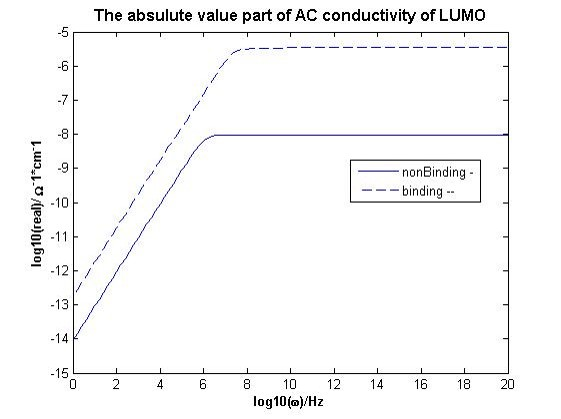
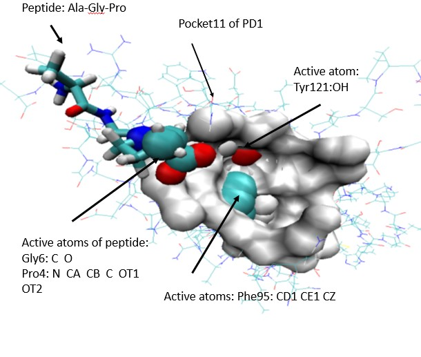

<!DOCTYPE HTML>
<html>
<head>
<meta http-equiv="Content-Type" content="text/html; charset=utf-8">
<title>Mednolia</title>
<script type="text/javascript">

  var _gaq = _gaq || [];
  _gaq.push(['_setAccount', 'UA-33863391-1']);
  _gaq.push(['_trackPageview']);

  (function() {
    var ga = document.createElement('script'); ga.type = 'text/javascript'; ga.async = true;
    ga.src = ('https:' == document.location.protocol ? 'https://ssl' : 'http://www') + '.google-analytics.com/ga.js';
    var s = document.getElementsByTagName('script')[0]; s.parentNode.insertBefore(ga, s);
  })();

</script>

</head>
<body>
 <p align=left ><a href="index.html"><font color="FF0000"><h3>返回主页</h3></font></a>
<table width="100%" height="40" border="0" cellspacing="0">
   	<tr>

<pre><h2>
                             PD1-PDL1的量子力学计算
							 
     尽管PD1-PDL1的工作巳獲得诺贝尔奖，但是我们仍然不了解PDL1与PD1结合后会导致T细胞无法识别癌细胞的
机制如何？如果我们无法了解它们与PD1-PDL1相互作用的微观机制，就不会开发癌症的免疫疗法！

	根据量子力学，分子的所有特性完全取决于其波函数和能级。我们使用处于结合状态和非结合状态的PD1的波函数
来计算其电导率。实际上，PD1与PD-L1结合后，其三维结构发生了变化，从而交流电导率将从低电导率状态转变为高电导率
状态的半导体。形成位于T细胞膜上的电子通道。尽管膜是绝缘体，但整个膜之间存在电势差，外部始终为正，内部始终
为负。
	而且电导率的变化主要决定于三维结构,不决定于蛋白质的一级序列。
    
	正是这股电子载流子由PD1流入T细胞，引出T细胞发生一系列生化反应，从而使T细胞无法识别癌细胞。
	
	无论处于非结合状态,还是与PDL1处于结合状态的PD1，其HOMOs电导率都大于LUMOs电导率。这意味着蛋白质中的
主要跳跃是空穴跳跃。

	因此，如果我们可以使用某些肽与PD1结合，并且这种结合比PD1-PDL1强，那么就能打破PD1-PDL1信号通路！
    
             
</h2>
</pre></td></tr>
</table> 
</body>
</html>